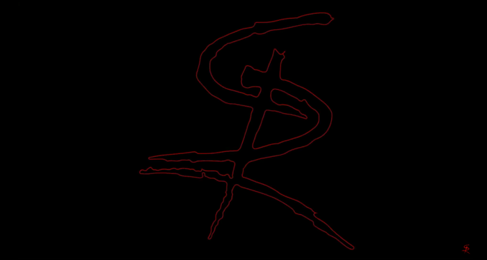

Lo que no se ve. Lo que se siente.

Escuchalo mientras lees
Una de las piezas más introspectivas de Soulriser. Leela, escuchala y sentí lo que hay detrás.
No me hagas ver en lo blanco si mis ojos ven negro es demasiado para mi cabeza no hay nada que buscar no intentes volverme loco no voy a amar más a tu puerta hoy te declaro la guerra no me arrastraré como tu quieres seca esa lagrimas me saben a mentira maldita arpía no hay nada que buscar no hay nada que recordar no soy un tonto mas de tus engaños no me mires con esos ojos de gata resfriada no volarás más mi cabeza hoy te declaro la guerra no me arrastraré como tu quieres seca esa lagrimas me saben a mentira maldita arpía yeeah hoy te declaro la guerra no me arrastraré como tu quieres seca esa lagrimas me saben a mentira maldita arpía yeeah maldita arpía maldita arpía maldita
¿Por qué el cielo es tan gris? y las luna roja viste el crujir de dientes oigo hoy mil lagrimas corren por la piel de aquel que un dia vio nacer la luz que al fin el perdió culpable de mi error ya no tengo la pasión que un dia tuve en mi el azufre tocare y pidiendo gritaré que te acuerdes de mi golpeando en las puertas del cielo diré, que me dejes entrar pero es más difícil que buscar la aguja en un pajar
Una mujer, estoy delirando otra vez que me paso? otra vez inmovil me dejo sonrisa cruel, a esos labios ya probe a esa voz, no daré mí consentimiento nooo! ven hacia mi ja ja ja ven hacia mi ja ja ja Una mujer, estoy delirando otra vez que me paso? otra vez inmovil me dejo sonrisa cruel, a esos labios ya probe a esa voz, no daré mí consentimiento nooo! yo te daré lo que tu dios no te puede dar (dame tu alma) si quieres vivir un par de años más (ya firma) te daré mi palabra (en fin) para que te unas a mi y si das vuelta a tras yo te encontrare hasta que tu dueño seré oooh oooh oooh oooh
Desde mis sueños no vas a escapar si los demonios te siguen de atrás procura que la luz llegue hasta ti y no te podran herir los sueños que tienes no son de verdad son cosas que no puedes alcanzar procura que la luz llegue hasta ti y no te podran herir y al anochecer te convertirás en la bestia que no quieres ser jamás y la sangre que corre por tus pies ya no la puedes ver más la luz que ves no la puedes comprender la luz que ves no la puedes entender la luz que ves no la puedes comprender la luz que ves no la puedes entender la luz que ves no la puedes comprender la luz que ves no la puedes entender Luz!
Un sentimiento, una historia sin fin un recuerdo que no volverá aquí una llama que me consume a mi y no puedo seguir pensando así No puedo pensar que, nunca volverás y sigo soñando que, tu regresaras una estrella te llevo y aquí en la tierra te extraño yo oooooh unas palabras que prometí al hablar vivir los años que no pudiste amar entre las nubes tú viajas sin razón y aquí en la tierra, tu recuerdo lo tengo yo No puedo pensar que, nunca volverás y sigo soñando que, tu regresaras una estrella te llevo y aquí en la tierra te extraño yo ooooooh oooooh ooooooh
Despierta ahora, no duermas más eleva tu alma, vé más allá el tiempo no espera a nadie ya encara sin duda tu realidad SOULRISER! SOULRISER! SOULRISER! SOULRISER! Despierta ahora, no duermas más eleva tu alma, vé más allá el tiempo no espera a nadie ya encara sin duda tu realidad SOULRISER! SOULRISER! SOULRISER! SOULRISER! confia en vos, el universo está a tu favor confia en vos, libera ya ese poder interior confia en vos, sigue el latido de tu corazón hasta que trasciendas, hasta que trasciendas, hasta que trasciendas de tu dolor confia en vos, el universo está a tu favor confia en vos, libera ya ese poder interior confia en vos, sigue el latido de tu corazón hasta que trasciendas, hasta que trasciendas, hasta que trasciendas de tu dolor eeeeeeeh eeeeeeh eeeeeeh ja ja ja ja eeeeeeeh eeeeeeh eeeeeeh
En sueños me llama en sueño menciona mi nombre esa voz que susurra al oído las llamas de las tinieblas y una oscura sombra penetra en mi cuerpo inmovil que espera salir que espera salir, que espera salir que espera salir En sueños me llama en sueño menciona mi nombre esa voz que susurra al oído (dale despertate!) las llamas de las tinieblas y una oscura sombra penetra en mi cuerpo inmovil que espera salir que espera salir, que espera salir que espera salir un fantasma colgado con ruido de espadas siguiendo la guerra que muere mañana y aturdido por el recuerdo de la noche clara buscando la huella de mis entrañas que espera salir, que espera salir que espera salir eeeeeeeeeeeeeeeeeh
Hermano te escribo esta carta, quizás sea la última desde aquí en este sur tan frío y cruel desde este mar que se pintó de rojo carmesí hermano muchos meses han pasado y estoy lastimado Hermano te escribo esta carta, quizás sea la última desde aquí en este sur tan frío y cruel desde este mar que se pintó de rojo carmesí hermano muchos meses han pasado y estoy lastimado mi mente esta bloqueada y no logro comprender ¿El por qué estoy luchando? ¿El por qué me están matando? he necesitado muchas veces los abrazos de mamá y yo no entiendo que estoy haciendo aca Hoy volveré, Hoy volveré Hoy hoy hoy VIVA LA PATRIA CARAJO!
Hoy tuve un sueño que me da que pensar un padre e hijo que se estan por matar y una virgen que sangra frente a mi un par de bestia que están junto a ti ey ey ey ey ey ey ey ey el sueño sigue y ya no quiero ver mas violaban a un niño que es muy chico de edad un par de ancianos que luchan por vivir y dos muchachos juegan con un arma hasta morir no se si es un sueño o la realidad yo ya quiero despertar y mi lágrimas no van a acabar este mundo no cambia mas ey ey ey ey ey ey ey ey ey ey ey ey ey ey ey ey ey ey ey ey ey ey